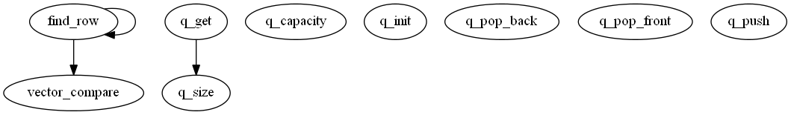

Master index
Index for mtids\subfunctions\matgraph\@graph\private
Dependency Graph for mtids\subfunctions\matgraph\@graph\private

Generated on Mon 01-Oct-2012 17:13:42 by
m2html
© 2005
 Master index
Master index Master index
Master index